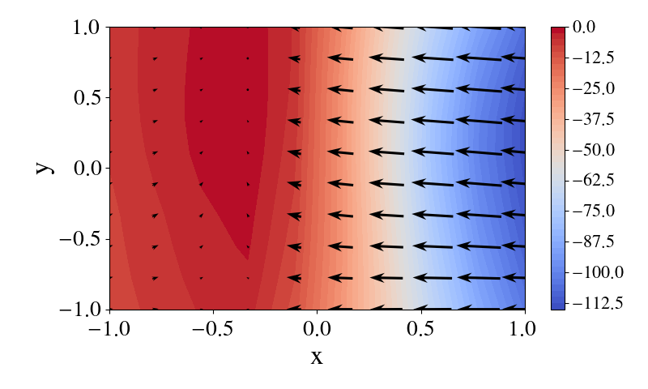
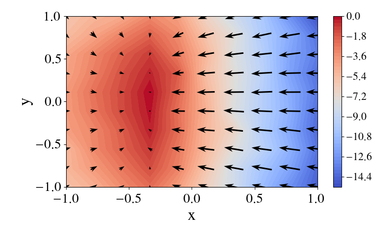
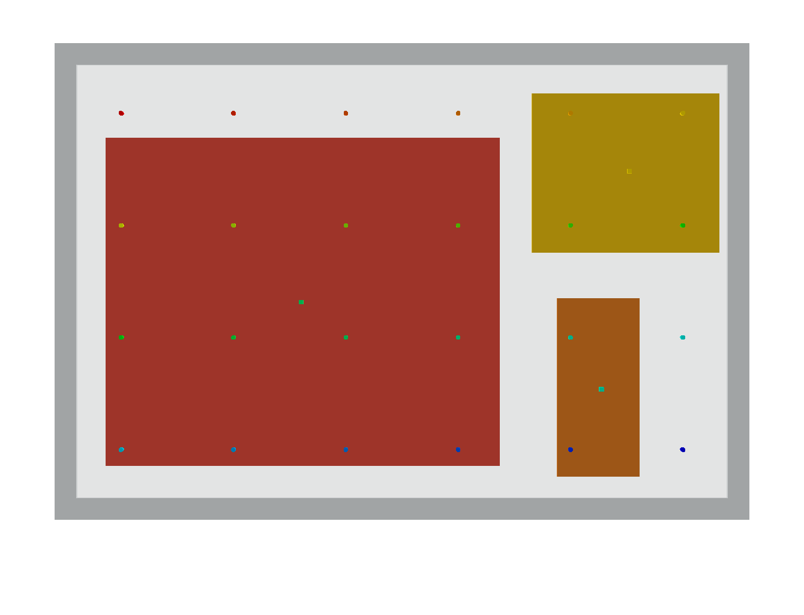

<div>
  Problem: Placing <span class="red">red</span> inside
  <span class="mybox">container</span> conditioned on the poses of
   <span class="orange">orange</span> and 
   <span class="yellow">yellow</span>, <br>while satisfying constraints:
  <span class="constraint">
    (left-of, 
    <span class="red">red</span>, 
    <span class="orange">orange</span>),
    (left-of, 
    <span class="red">red</span>, 
    <span class="yellow">yellow</span>)
  </span>


  <table>
    <tr>
        <th>Field of <span class="constraint"> left-of</span></th>
        <th>Field of <span class="constraint"> left-of</span></th>
        <th>Composed Field</th>
        <th>Sampled Data</th>
        <th>Diffusion Process</th>
    </tr>

    <tr>
      <td>
        
      </td>
      <td>
        
      </td>
      <td>
        
      </td>
      <td>
        
      </td>
      <td>
        <video class="video" id="result-video" class="full-image" muted autoplay width="100%" onclick="this.play()" controls>
          <source src="media/results/left-of-left-of_data.mp4" type="video/mp4">
        </video><br>
      </td>
    </tr>

  </table>
</div>

